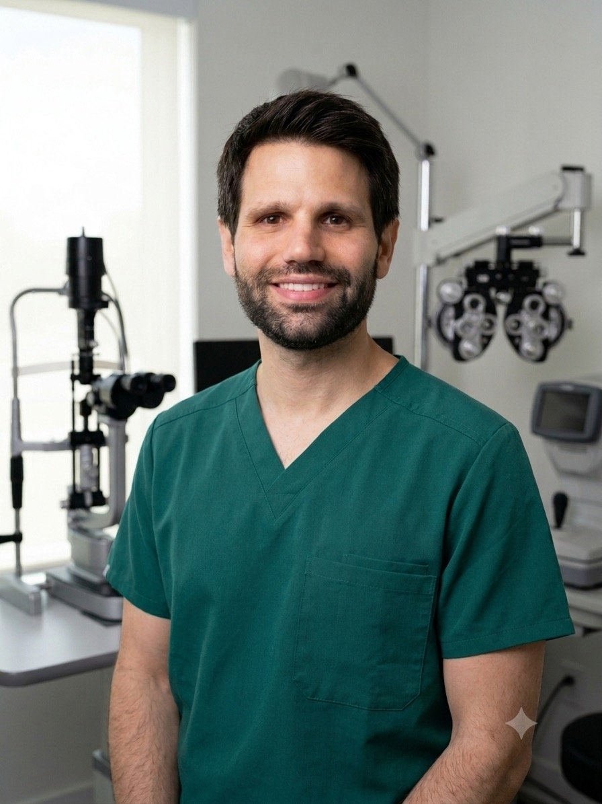
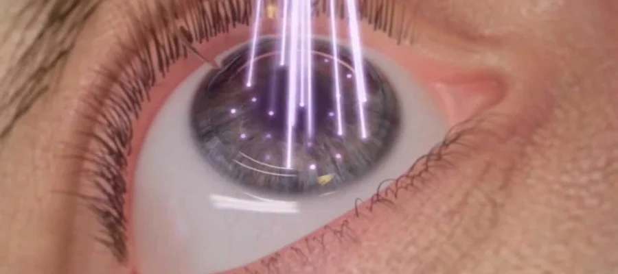

Catarata
Cirugía de catarata con selección individualizada de lente intraocular y planificación basada en la anatomía ocular y el estilo de vida.
Ver más →Oftalmología · Cirugía · Precisión
Cirugía de catarata, cirugía refractiva y segmento anterior, con una mirada académica y una planificación personalizada para cada paciente.

Una forma de trabajar
En cirugía ocular, cada detalle cuenta. La evaluación clínica, los estudios complementarios y la planificación quirúrgica permiten adaptar la estrategia a las características del ojo, las necesidades visuales y las expectativas de cada persona.
Áreas de especialización
Una práctica centrada especialmente en catarata, cirugía refractiva y segmento anterior.
Cirugía de catarata con selección individualizada de lente intraocular y planificación basada en la anatomía ocular y el estilo de vida.
Ver más →Evaluación y tratamiento de miopía, hipermetropía y astigmatismo mediante distintas técnicas corneales y opciones intraoculares.
Ver más →Abordaje quirúrgico de patologías y necesidades del segmento anterior, con especial atención a la evaluación corneal y la planificación.
Tecnología →01 · Catarata
La elección depende de la evaluación ocular, las características del ojo, las actividades habituales, las necesidades visuales y también de las posibilidades de cada paciente.
Se utilizan lentes monofocales, EDOF, multifocales y tóricas, seleccionadas de forma personalizada. La práctica incluye cirugía de catarata convencional y femtosegundo.
La planificación combina examen clínico y estudios de alta precisión para definir la estrategia quirúrgica más adecuada.

02 · Cirugía refractiva
La práctica incluye PRK, LASIK, femtoLASIK y CLEAR, además de la posibilidad de lentes fáquicas ICL en pacientes seleccionados.
FemtoLASIK es la técnica refractiva principal. La indicación se realiza después de estudiar la córnea y valorar si el procedimiento es adecuado para cada paciente.
03 · Tecnología
Los estudios no son un fin en sí mismos: aportan información para comprender el ojo y planificar con mayor precisión.
Tomografía y análisis corneal, biometría y evaluación de parámetros relevantes para la planificación.
Biometría y herramientas de planificación para optimizar el cálculo y la ejecución de la cirugía.
Evaluación de mácula, nervio óptico y segmento anterior cuando el caso lo requiere.
Integración de la evaluación clínica y los estudios para adaptar la estrategia al paciente.
Sobre mí
Soy médico y especialista en Oftalmología por la Universidad de la República, con una trayectoria que combina actividad clínica, formación continua, docencia universitaria y práctica quirúrgica.
Actualmente soy Profesor Asistente de Oftalmología en la Universidad de la República. Mi actividad docente comenzó hace más de una década, primero en Fisiopatología y posteriormente en Oftalmología.
Comencé a realizar cirugía oftalmológica durante la residencia en 2017. Desde entonces, la práctica quirúrgica ha sido un componente central de mi actividad profesional.
Actividad académica
Más de 10 años de docencia universitaria en Fisiopatología y Oftalmología.
Participación como expositor y actividad científica en congresos nacionales e internacionales.
Trabajo en prevención de enfermedad vascular y en el efecto del consumo de yerba mate sobre la presión intraocular.
Miembro de sociedades profesionales, incluyendo la American Society of Cataract and Refractive Surgery.
Preguntas frecuentes
Se analiza la anatomía ocular, la salud del ojo, las necesidades visuales, las actividades habituales y las expectativas del paciente. No existe una única lente ideal para todas las personas.
No. La indicación requiere una evaluación oftalmológica completa, especialmente de la córnea y de la estabilidad de la graduación.
Permite obtener mediciones más precisas, analizar la anatomía ocular y planificar mejor. La tecnología es una herramienta dentro de una decisión médica integral; no reemplaza el criterio del cirujano.
Solicitar consulta
Las consultas se coordinan directamente por WhatsApp o correo electrónico.